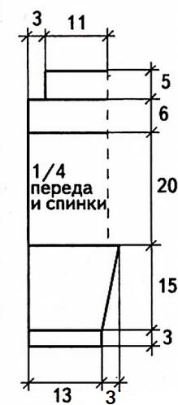
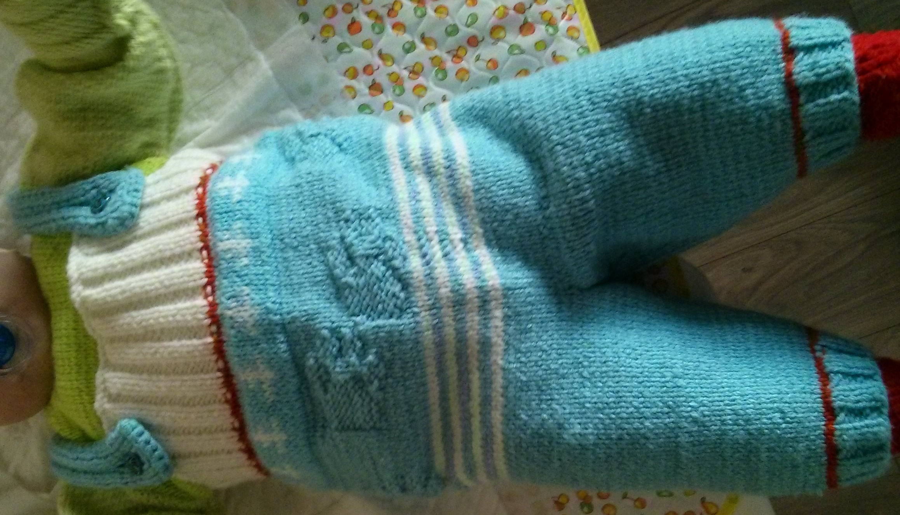

Комбинезон

Возраст: 8 - 10 месяцев
Вам потребуется:
- 200 г голубой пряжи Лиза (шерсть, акрил 300м/100г) в два сложения
- 20 г белой пряжи Наташа (шерсть, акрил 250м/100г) в одно сложение
- прямые спицы № 4
- крючок 3.5
- 2 пуговицы
Плотность вязания: 10х10 см = 20 петель х 26 рядов
Описание

Левая часть
Наберите нитью голубого цвета 56 петель и провяжите резинкой 2 x 2 (попеременно 2 лиц. петли, 2 изн. петли) 3 см. Далее вяжите лиц. гладью. Провяжите белой нитью 2 ряда, затем перейдите на голубую нить и провяжите 38 рядов лиц. гладью, прибавляя с обеих сторон 6 раз х 1 петле. На высоте 15 см от резинки свяжите шаговое закругление, убавляя с обеих сторон 1 раз х 3 петли, 1 раз х 2 петли, 1 раз х 1 петлю. Оставьте левую часть на спицах.
Перед
Аналогично свяжите правую часть, затем обе части наденьте на одну спицу и соедините их, провязав 1 кром. петлю левой части и 1 кром. петлю правой части вместе лиц., затем вяжите лиц. гладью. Через 38 см от наборного края вяжите: лиц. гладью 2 ряда белой нитью, 2 ряда голубой нитью, 2 ряда белой нитью. Затем вяжите резинкой: 6 рядов голубой нитью, 2 ряда белой нитью, 16 рядов голубой нитью. Через 44 см от наборного края закройте 69 петель, оставьте центральные 44 петли для грудки. Через 49 см от начала все петли закройте.
Сборка
Выполните шаговые швы и соединительный шов на спинке. Для бретелей в задней части комбинезона на спицы наберите по 8 петель. Вяжите резинкой: 1 кром. петля, 2 лиц. петли, 2 изн. петли, 2 лиц. петли, 1 кром. петля 24 см. Через 22 см от начала вязания сделайте отверстие для пуговиц. Бретели обвяжите крючком рядом ССН. Пришейте пуговицы к грудке.
Результат


Comments
comments powered by Disqus